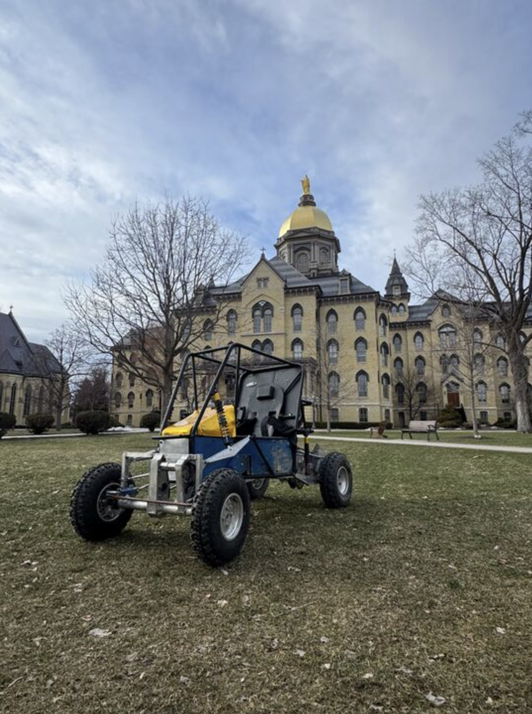
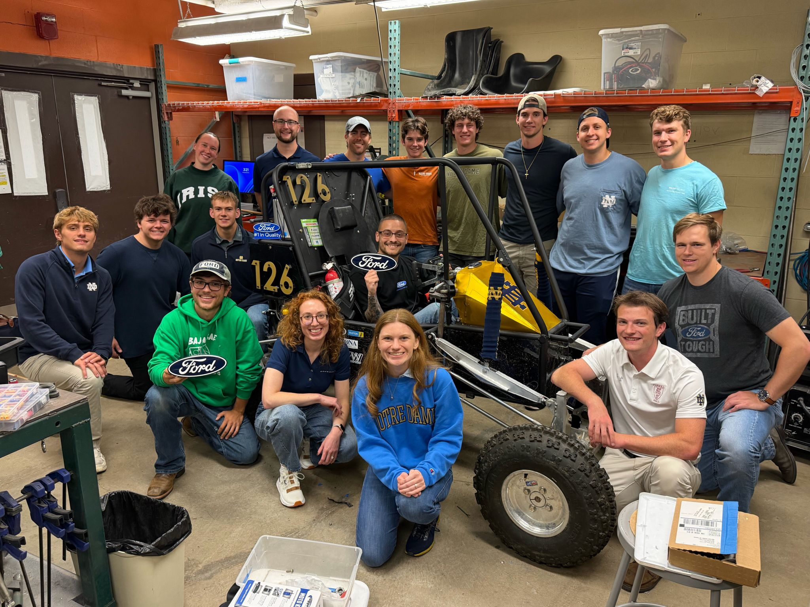

Baja SAE is a collegiate competition that is conducted by SAE International (The Society of Automotive Engineers) where teams from different colleges compete in a series of competitions that simulate real-world automotive engineering. Each team is challenged to create a single-seated all-terrain off-road prototype vechile. In competition, each team must complete a series of evaluations, reports, presentations, and inspections, as well as more dynamic events such as acceleration, maneuverability, suspension/traction, and an endurance race competition. On the ND Baja Baja SAE team, I am a part of the brakes and suspension unit of the team.
As a part of the brakes and suspension unit, we must not only be familiar with our units aspects of the car, but also all the other units such as the chassis, drivetrain, and payload teams. All the units of the team must be in conjuction with each other in order for the car to work to its full potential. On our unit specifically, we first define our goal as a team in competition and then create prototypes of our brakes and suspension before testing, running simulations, and finally producing them for the car.
Being a part of this team has helped me to gain much knowledge in the field suspension and brakes in automotives. I have strengthened skills in CAD, coding, simulations, and manufacturing. The club is one of the most hands-on enigneering clubs at Notre Dame, which helps me to develop many skills in a new dynamic such as adaptability, creativity, and problem-solving.

